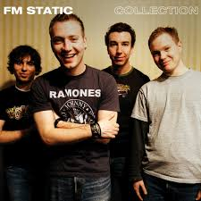
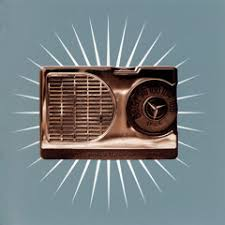
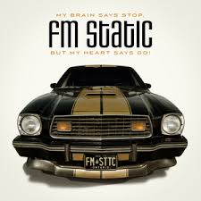

FM Static
FM Static is a Canadian pop-punk and Christian rock duo known for their infectious energy, relatable lyrics, and uplifting themes. Formed by Trevor McNevan and Steve Augustine, the band has gained a dedicated following with their feel-good anthems and introspective ballads that connect deeply with listeners.
Top Songs
Explore FM Static's most memorable tracks, including the heartfelt "Tonight," the upbeat "Take Me As I Am," and the reflective "Moment of Truth." Their music blends catchy melodies with meaningful lyrics, offering anthems of hope, love, and self-discovery.

Her Father's Song
Take Me As I Am
Tonight
Six Candles
